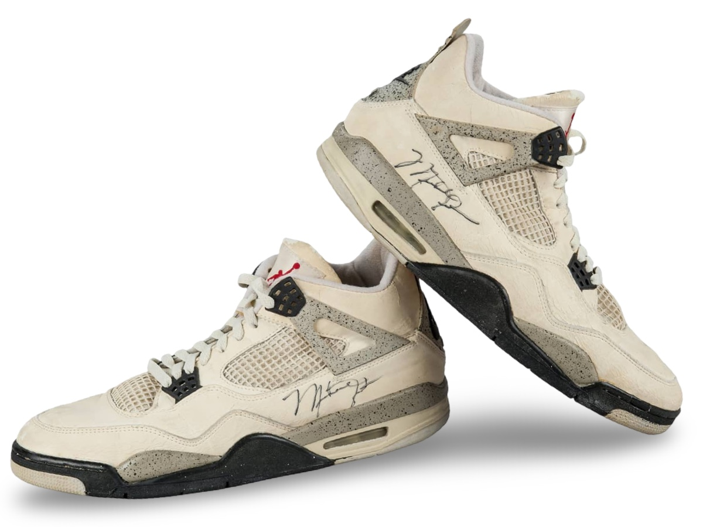
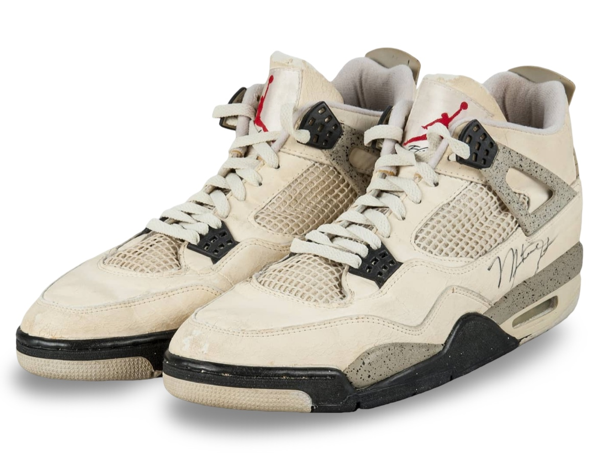
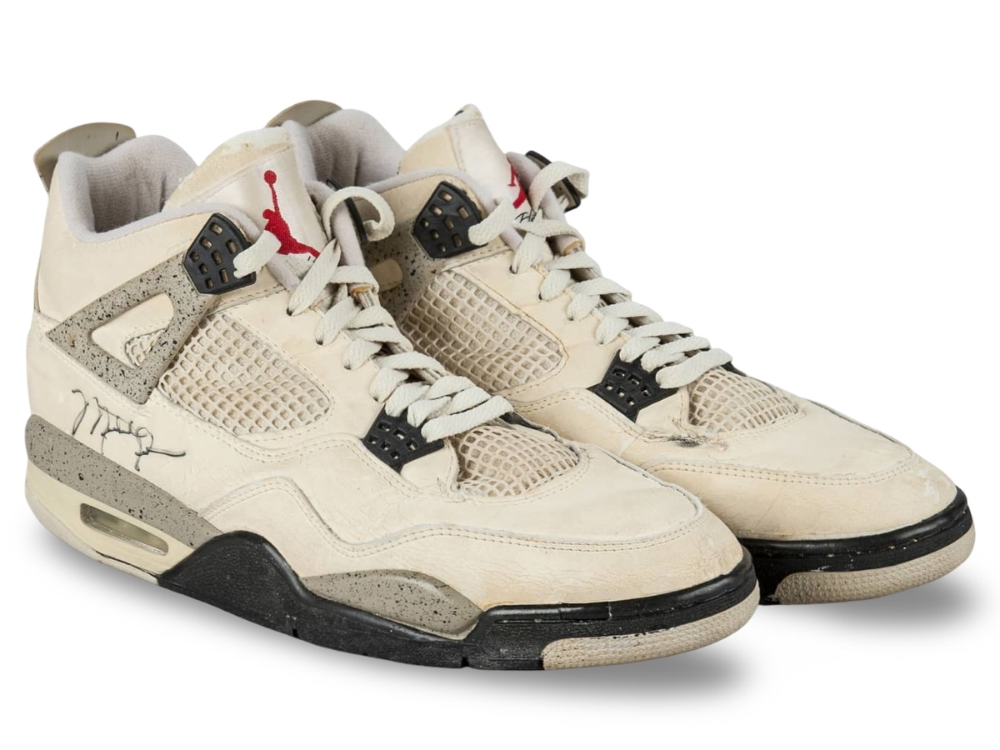

Air Jordan IV attributed to the March 31st game.
Although the Bulls lost, Jordan would go on to have a triple
double on this night.
Public Sale
- Auction House: Goldin Auctions
- Sale Date: January 30, 2016
- Lot #: 1175
- Sale Price: $14,400
Photo Match Details
- Photo-Matched: No
- Games Photo-Matched: 0
- Photo-Matched By:
Research & Provenance
- Provenance comes from a friend of Michael Jordan's (Ronnie), a letter is provided stating she attended this game and was given the shoes off his feet directly after the game.
- Internal images and video are apparent to this game and held within the archive.